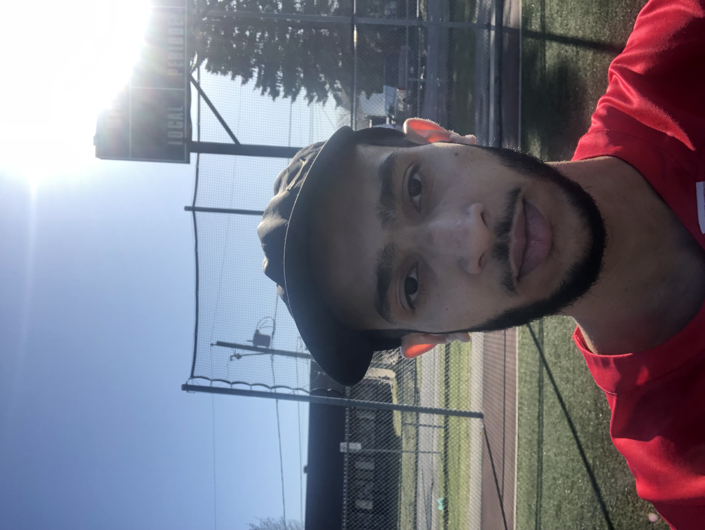

Dans cette page, vous allez découvrir mon activité de soccer que j'ai organisé en 2 séances.
Voir le déroulementDéroulement
Je m'appelle Youssef El Maazouzi, étudiant au Collège Montmorency et attaquant dans une ligue de soccer compétitive. Pour préparer ma saison d'été avant mon premier match le 18 mai, j'ai organisé deux séances d'entraînement extérieur au Parc Laval-Ouest avec un ami gardien de niveau AA.
La première séance (17 avril, 2h00) portait sur les passes longues, les centres, les coups de pied arrêtés et les tirs de pénalité. La deuxième séance (24 avril, 1h00) était axée sur les passes courtes, les centres et les tirs depuis l'extérieur de la surface. L'objectif était de peaufiner mes habiletés techniques (première touche, passe, tir et contrôle du ballon)en dehors des entraînements collectifs après une longue pause hivernale.

Vidéos
Bilan
Sur le plan organisationnel, cette activité m’a permis de planifier une séance d'entraînement de manière structurée. Cela m’a permis de développer mon sens de l’organisation et mon autonomie. Faire une préparation solide à l’avance a eu des conséquences positives sur le déroulement de l’activité. Par exemple, j’ai pu prévoir le matériel, la date, la durée et surtout des exercices spécifiques correspondants au but de l’activité.
D'abord, un point fort que j’ai ressenti pendant l’activité était les conditions météo. Il faisait une bonne température, aux alentours de douze degrés, de quoi mettre un short et un chandail de sport à manches courtes en ce temps de printemps. Les deux journées étaient ensoleillées et cela rendait l’ambiance plus agréable. Par la suite, un point négatif que j’ai ressenti durant mon activité était la fatigue musculaire de mes jambes. En effet, j’ai tiré énormément de fois en puissance durant les 2 séances et mon corps n’était pas encore habitué à ce rythme. Vers la fin des entraînements, je perdais un peu ma concentration et mon énergie et cela affectait la qualité de mes tirs.
Si je devais refaire cette activité, je ferais mieux de gérer l’intensité des tirs pour éviter une fatigue musculaire importante à la fin d’une séance. Par exemple, je pourrais faire les exercices les plus intenses au début pendant que mes jambes sont encore fraîches et faire les moins fatigants à la fin. Par la suite, j’ajouterais une troisième personne afin de mieux diversifier les exercices. En étant plus de deux personnes, l’activité est plus variée et intense. Par exemple, on pourrait faire des exercices de combinaisons et reproduire des situations de matchs. Aussi, cela rajoute une compétitivité et nous donne plus de force mentalement parlant de continuer l'entraînement jusqu’au bout.
Suite à mon test physique 1, j'ai constaté que mes qualités techniques (coordination, touche de balle) étaient un point fort, tandis que mon endurance et ma vitesse de déplacement représentaient des axes d'amélioration. Mon activité était donc bien adaptée à mon profil, puisqu'elle misait davantage sur le travail technique avec ballon que sur le cardio. Cependant, j'ai légèrement dépassé mes limites lors des exercices de tirs, ce qui m'a causé des courbatures aux jambes les jours suivants. Cela m'a permis de prendre conscience de mes limites en endurance musculaire et de l'importance de mieux réguler mon effort pour prévenir les blessures.